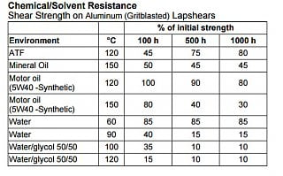
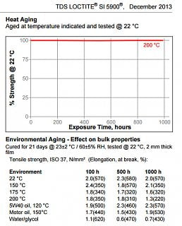

-
What are you guys using for oil pan gasket silicon on your VG's? I found a publication from Nissan (I think with a type-o) that suggests using Loctite Ultra Grey 599 (should say 5699) for the oil pan (good up to 626 °F intermittently) seal. We have a lot of oil pan gasket "leaks", and I wondered if there is a better recommendation now-a-days.
i noticed the Permatex brand offers a similar product (Ultra Grey also) that says it's only good up to 500 °F, but is good for high torque applications (most flexible in moving joints).
I'm not sure why these oil pans always leak, but it's right at the joint in the rear (and front sometimes) main seal retainer and oil pan junction. The FSM says to add sealant at these two corners where there is an additional rubber seal (formed and provided in gasket kits) between the retainer and the oil pan. The front side has the same application between the oil pump and the pan.
Im looking for thoughts/suggestions on how to get a better and longer lasting seal.
Thanks!
-
Permatex Ultra Black with an oil pan gasket.Last edited by NissanXRMA; 02-26-2017, 09:39 PM. -
used same.Originally posted by NissanXRMA View Post
probably next will be Permatex gray or abro gray -
Once you use Ultra black, you'll never even look at that blue or orange crap again.
There is a rubber oil pan gasket that comes with some gasket kits. I used one my last build but have no mileage on it yet.

84 AE/Shiro #683/Shiro #820/84 Turbo -
Thanks for all the comments. I called and talked to Henkel (manufacturer of the Loctite product; formerly the owner of Permatex) for a long while today, discussing the various products available. I also studied the technical data sheets for a few hours after that, and compared various characteristics about each product, in effort to identify a better solution.
All the VG33E's I have leak oil in the area near the rear main. After breaking down two of the four I have, it looks more to me like the seal with the oil pan is the cause, not the main seal. The front also leaks (at the junction between the oil pan and the oil pump).
I'm trying to determine how to address the properly use the FIP gasket material in combination with the silly little rubber seals that are providing to join between the rear main seal retainer and the oil pan, and between the oil pump and the oil pan. The formed seals I've removed appear to have gasket material on both sides of the little rubber seal.
I've examined:
Loctite 5699 Ultra Grey (FSM calls for it)
Loctite 5999 Heavy Body Ultra Grey
Loctite 5920 Copper
Loctite 5900 Black
and Permatex Ultra Grey
I'm building a spreadsheet that more easily shows the various comparable characteristics, but something that is jumping out to me is the Copper. It shows slightly higher performance operating characteristics than all the others. It does show a serious degradation in strength though, when exposed to motor oil that reaches 150 deg C (302 deg F). It shows excellent strength when exposed to motor oil at at less than 120 degC (248 degF).
Do you guys have any idea what the normal operating temperature of the engine oil is? I know that they typically are estimated to be about 15 deg higher than coolant temps, but I'm not certain what temps these engines run either.
I'm considering using the Copper. Any reasons you can see that I shouldn't try this? I think the Ultra Grey is simply not holding up over time at the front and rear of the oil pan. -
Is that degradation tested with conventional petroleum motor oil or synthetic. Petroleum may be more aggressive. From the datasheet for 5699 it only specifies "multi grade".
As with any adhesive, surface prep is the key. And you are binding 3 different surfaces. Bare metal block, powder coated pan and buna rubber seals. Keep in mind that what sticks well to one substrate, may not stick as well to the other. This is documented in their adhesion properties.
I've used plenty of adhesives (UV cure and conventional RTV) that bond well to bare metals only to peel off of anodized or powder coated parts like a vinyl cling. In my industry it also has to be extremely durable when exposed to intense UV light and solvents strong enough to attack powdercoatings. We use Loctite SI 595 after much in-house testing.
Also a contributing factor (and my hypothesis) as to why you see leaks at the front and back is that the rubber seals shrink with thermal cycling over time, further compromising any thin film RTV seal that was put on there to begin with. The buna gaskets make up 99% of the seal at some points and when they shrink, the thin layer (1%) of RTV that was put there can no longer seal up the gap difference.
Interesting that the dropoff in adhesion when exposed to ATF is so drastic for the 5699. The Permatex ultra black doesn't have such a fancy or informative datasheet that addresses this.Last edited by Z_Karma; 02-27-2017, 06:05 PM.
84 AE/Shiro #683/Shiro #820/84 Turbo -
Agreed! Yeah, those data sheets are actually pretty intense with data. Permatex didn't have as much information.Originally posted by Z_Karma View Post
The degradation was more severe on the copper (5920) I'm considering using. Check out the image attached (I was trying to figure out how to upload the entire doc to a google doc share, but haven't figured that out yet.). It shows 5W-40 Synthetic degrading to 30% initial strength after 1000 hours of exposure to 150 degC oil. If I was confident the oil temp would stay close to 120 degC (which I'm sure it would), this compound exhibits more suitable properties than the Grey or Black. Funny thing is though, they market the copper product as something that is best used for turbo charged applications. I would expect oil temps to be higher in turbo applications, compared with NA. ??
 -
Ok, try this link. I've uploaded all the technical data sheet files to a Google Drive share.
https://drive.google.com/drive/folders/0BwdnP9qgdODLT2o4M3poXzNKSGcLast edited by spddm0n; 02-28-2017, 06:51 PM. -
After some additional review of the "Black", this might actually be a MORE suitable solution. It appears to maintain itself better than the Copper, in a slightly more harsh environment (environmental temperature and higher oil temperature exposure ).
After carefully studying these two charts (though I detect a slight data conflict with another chart on the data sheet, unless I'm reading it incorrectly), it would appear that the Black holds better strength in the heated oil environment and cures faster.
Having done all this research now, where is the best place to buy the Black 5900? I don't seem to find it in local stores. Even Amazon has a limited number of sellers. -
I've used grey with absolutely no issues whatsoever. clean everything extremely well with brake-cleaner. put on a very thick bead and allow it to set up for 5-10 minutes before assembling.
These are the instructions for Black, but I use them for Grey. Either way Black or Grey, follow these and you won't have any problems.
"5. Apply a continuous and even bead of silicone to one
surface (the OP), first tracing the internal areas (around inside of bolt holes) of the gasket
configuration, then all surrounding bolt holes.
6. Assemble parts immediately while silicone is still wet. (I personally let it set up for 5-10 minutes)
7. Finger tighten flange only until material begins to seep
out the sides of the flange.
8. Allow to set for at least two hours (I waited about 4 hours by circumstance) and re-torque at least
one quarter to one half turn (I torqued to specified value).
9. For best results, allow to cure overnight (oil drain plug removed so air can circulate)." -
I use the Nissan Gray Silicone. Works better than all the others. Part number is 999MP-1217HP. It is what the factory uses on all the new stuff.
A and B series engines use a rubber oil pan gasket. The W series uses Nissan gray silicone.
1986 300ZX Turbo…sold
1990 Skyline GT-R…new money pit
2014 Juke Nismo RS 6-speed…daily -
Hey, thanks for the reply. Yeah, I was looking at products other than the Nissan Grey, however, the old part number that was called for back then was 999MP-A7007. It looks the new part number is a product made by ThreeBond). I have an old official Nissan Service Bulletin suggesting the 999MP-A7007 is the Loctite 5699. I just compared the old Loctite 5699 to the newer Three Bond 1217H Grey. That new Grey actually looks like it might do the best job, actually. It gets a bit harder than the Loctite 5900 (black), and has better tensile strength and elongation properties, though less temperature resistant. It has superior shear strength as well. Interesting! Thanks for bringing that to my attention! I had trouble locating the Loctite 5900 anyway, so I'm going with the Nissan 999MP-1217HP. Thanks!Originally posted by NissanEgg View Post
I'm finding all the oil pans leaking. I thought the leaks were from the main seals, but the main seals seem to be in good shape. These pans only seem to leak at those pesky front and rear joints with the oil pump and rear seal retainer, where there is that additional rubber seal (buna) between the surfaces (weird design). I imagine the factory made use of those additional seals to address a gap issue (too large for the RTV), but all the leaking seems to be from those areas.
Are you applying sealant to both side of the "feet" of those rubber seals, when fitting between the pan to the the pump and real seal retainer? Are you applying a full bead, or just enough to "hold" that seal in place when installing the pan to the block?
Thanks!
Last edited by spddm0n; 03-02-2017, 05:12 PM. -
I apply a small portion of RTV on block side of the half-moon shaped seals. Then when putting the bead of RTV on the pan I go fairly heavy around the ends of the pan where the seals butt up against the pan. I never apply RTV on the groove where the seals sit as that encourages the seal to misalign when tightening down the pan.
1986 300ZX Turbo…sold
1990 Skyline GT-R…new money pit
2014 Juke Nismo RS 6-speed…daily

Copyright © 2006–. All rights reserved. Privacy Policy